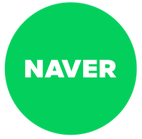
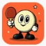

Leadership in the Agent Era
How to lead organizations where people and agents work together
Jayden Kang, Head of AI Strategy, Liner
AI is emerging as the next technology paradigm

*IBM introduced the IBM Personal Computer (Model 5150) in 1981; **The World Wide Web opened to the public in 1993; ***Apple launched the iPhone in June 2007; ****OpenAI launched ChatGPT (GPT-3.5) in November 2022
Global and tech roots, driving AI at Korea's frontier
Jayden Kang, Head of AI Strategy, Liner
Freechal
Kearney
Korea
Bain &
Company
LINE
Thailand
NAVER
kakao
Entertainment
kakao
Liner
AI Agents
B.A. Economics, SNU
MBA, Univ. of Michigan
National Economic Advisory Council
Member, AI Economy Policy Advisory Group
Asked about the rise of AI at the Marrakech Film Festival jury press conference in Morocco, November 2025, Bong Joon-ho said:
“My official answer is, AI is good because it’s the very beginning of the human race finally seriously thinking about what only humans can do.
But my personal answer is, I’m going to organize a military squad, and their mission is to destroy AI.”
Deadline, “Bong Joon Ho Jokes Wants To Organize Military Squad To ‘Destroy AI’,” Nov 29, 2025
Knowing AI trends and using AI well are two different problems. Using AI well and driving AX (AI transformation) need different perspectives. Driving AX and making AX stick are yet another challenge.
In one year, AI became a new hire with a top-2% IQ
IQ scores by AI model (test with unpublished questions; x-axis: IQ)
117→135
91→127
0→7
Human IQ distributionAI models (Jul 2025)AI models (Oct 2026)
Source: TrackingAI.org AI IQ Test (offline, unpublished questions), daily logs; mean of each model’s last 7 runs, Jul 31, 2025 and Oct 25, 2026 · Korean and US averages: Lynn and Vanhanen, IQ and Global Inequality (2006), estimates
AI cut a one-hour task from 45 to 5 minutes in 3 years
Time to finish a 60-minute task with AI
↑ Randomized trials: people using AI as a tool↓ Estimates from conversations: AI doing the task
Agent use surges
Sources: Dell'Acqua et al., HBS (2023) · Choi et al., Minnesota Law Review (2024) · Anthropic, Estimating AI productivity gains (Nov 2025) and Economic Index (Jan 2026). 2025–26 are Claude estimates, excluding review time
Yet AI adoption is not showing up in company results
- AI improved individual productivity80%
- AI contributed to company EBIT37%
- 56%No meaningful financial return yet
- 12%Both lower costs and higher revenue
- 6%Generate 5%+ of EBIT from AI (McKinsey)
- 7.5%Have scaled AI value company-wide (BCG)
Sources: McKinsey, The state of AI in 2026: On the road to ROI (Aug 25, 2026) · PwC, 2026 Global CEO Survey (Jan 20, 2026; fielded Sep–Nov 2025) · BCG, Applied AI Index 2026 (Sep 30, 2026; 1,330 CxOs)
On the front lines, too, AI’s payoff is in question
“Shouldn’t our company
adopt AI too?”
Many companies invested in custom AI
models and in-house AI systems
→New models kept arriving, so swappable setups became a must
“With models this fast,
where do we start?”
Beyond internal models, demand surged
for training on the latest (SOTA) models
→Companies rushed to launch company-wide AI training
“Who manages the
rising token costs?”
Some staff spent $500–1,000 a month on Claude, so Accenture capped it at $29 a person (Oct 2026)
→Token costs now need managing like labor costs
Executive
doubts
- We trained everyone. What comes next?
- Token costs keep rising. So, results?
- Is AI adoption really paying off?
- How far do we go, and by what measure?
Source: Forbes, "Accenture Clarifies Claude Spending Limits As AI Cost Questions Grow" (Oct 16, 2026)
Why AI adoption is not showing up in results
Employees can’t keep up with the change
Employee know-how isn’t retained by the organization
AI is adopted with no hybrid organization design
AI training is up, yet the usage gap is widening
- 14%Leadersrare skills, high AI fluency
- 18%Heavy usershigh use, low expertise
- 11%Experts not yet using AI
- 56%Low-use majorityrarely use AI
6+ months of useNew users
- Work-related use7%p gap49%42%
- Iterative work with AI3.7%p gap28.2%24.5%
Sources: Workera, 2026 State of Skills Intelligence Report · Anthropic, Economic Index report: Learning curves · PwC, Global Workforce Hopes and Fears Survey 2026
Successful AX puts 70% of the effort on people
Effort allocation for successful AX
Focus on people and process
- Give employees a clear vision and a reason to move
- Co-design with merchandising, store and logistics teams; iterate fast
- Redefine processes and roles for people and agents
- Align culture with business strategy and KPIs
- Train the skills needed and build organizational capability
Focus on AI
- Apply demand forecasting, recommendations, generative AI and agents
Focus on data and technology
- Provide reliable technology for stores and the online mall
- Integrate product, inventory and customer data and systems
Source: BCG 10-20-70 rule, “AI Fuels Field Service Transformation. Change Management Provides the Spark,” January 2026. Details adapted to a retail context
More AI training alone will not bring employees alongLeaders must first show how they work with AI

- New ways of working with AI
- Personalized productivity tools
- The changing future workspace
2027 AX Plan
1. Background and goals
To keep pace with fast business change and customers' digital shift,
we make 2027 the year AX (AI transformation) accelerates
and focus company-wide strength on a base for sustainable growth.
2. Key initiatives
① Raise productivity by moving work processes to AI
② Build data-driven decision-making
③ Secure AI talent and strengthen organizational capability
3. Schedule and targets
| Quarter | Key initiative | Timeline | Target |
|---|---|---|---|
| Q1 | Build AI platform | Jan – Mar 2027 | 3 core systems |
| Q2 | Redesign work processes | Apr – Jun 2027 | Productivity +20% |
| Q3 | Data-driven decisions | Jul – Sep 2027 | 100 analysis reports |
| Q4 | Build org capability | Oct – Dec 2027 | 200 AI specialists trained |

I work alongside a team of 80 AI agents
/5color
/casting
/council
Working with AI takes six steps
Goal
/goalSet done criteria first
to fix the end state.
Format
/slide-libraryLock HTML slides to 16:9
and reports to A4.
Team
/castingCast roles: researcher,
designer, writer, more.
Review
/5colorCritique quality from
five color perspectives.
Polish
/koreanFix grammar and stiff,
machine-like phrasing.
Judgment
/councilReview it yourself, and
call the council if needed.
AX goes beyond training to leader-led change
Track the usage gap,
not training completion
- Firms offering AI training rose from 25% to 58%, yet the usage gap widened to 7%p
Share AI usage metrics by team regularly, and send hands-on coaches to lagging teams
Put 70% of AX effort
into people and process
- 29% of staff and 44% of Gen Z work against AI strategy, so tech spending alone falls short
Name an AX champion in each team, and find AX projects together with IT
Leaders show first
how they work with AI
- Employees follow how leaders actually work, more than what training says
Take reports in HTML, and show leaders reviewing with agents first (PowerPoint → 1 Pager → HTML)
One leader using AI well does not make an organization capableEmployee know-how needs a place to accumulate
Retailers and brands are linking their know-how to AI
~2,000 stores
Staff chatbot built from store teams' real questions and work docs, piloted in 400 stores, then rolled out to all
4 super agents
Merged scattered AI tools into four; the associate agent even handles benefits questions and parental leave requests
1,700+ stores
AI assistant on staff devices that answers product, project advice and inventory questions (with OpenAI)
30,000 users
In-house generative AI only for staff who passed governance training; 8,000 requests within 2 hours of launch
150,000 users
Staff AI app answering everything from schedules, leave and pay to policy and training (95+ use cases)
Field manuals
As at Target and Lowe's, store staff questions and work manuals are the first things an in-house AI assistant connects to
Sources: Target press release (Jun 20, 2024) · Reuters, eWeek, Walmart (Jul 2025) · Lowe's, OpenAI, Mylow Companion (May 2025) · Consumer Goods Technology, P&G chatPG (Jul 18, 2024) · CIO Dive, Kroger Sage (Jan 14, 2026)
Storing knowledge and skills alone does not change the workPut agents to work, then monitor them
Low-legacy AI natives are quickly wiring in agents
The AI-native work stack: Notion (knowledge) + Slack (workplace) + Hermes (working agent)
Company knowledge in one place
- Meeting notesDecisions in context
- ManualsHow work is done
- Project docsProgress and results
- Rules · know-howHow to judge
Agents are called in team channels
# team-channel
@Hermes List only what we decided in last month's meetings
Pulled the decisions from Notion meeting notes and Slack threads
Sources: Notion meeting notes · Slack threadsIllustrative
Runs in an environment set up by DevOps
- 01Memory builds upRemembers projects and people after chats end
- 02Skills build up and spreadA skill one person builds is used by the whole team
- 03Clearer, stronger guardrailsRuns tasks only inside isolated sandboxes
An agent posts assistant status and usage to Slack
Morning message from Pongpong, our agent manager

pongpongAPP
☕ Good morning! Pongpong here, just back from roll call with the assistants.
- 🚨 Status: Some assistants may not respond. An admin needs to check.
- 🙋 What to do: If one is stuck, try again shortly. Tell us if it keeps failing.
- 🧘 Good to know: There are signals for the admin to check.
- 🍃 Weather outside the office: 8–15℃, little chance of heavy rain.
- The weather is fairly cooperative today. Peace treaty with your commute: signed.
👀 I'll keep watching.
🏆 Top 10 busiest assistants, last 24 hours
Top 10 by requests in the last 24 hours · Existing tie rules kept · 30-day totals shown.
| Rank | Assistant | Req. | Sessions | Activity | Share | 30d rank | 30d req. | 30d sess. |
|---|---|---|---|---|---|---|---|---|
| 1 | Cloudy (Ari) | 148 | 34 | 36 | ███░░░░░░░27.0% | 1 | 1740 | 310 |
| 2 | Luna (Felix) | 77 | 23 | 43 | █░░░░░░░░░14.0% | 6 | 625 | 346 |
| 3 | Olaf (Rina) | 55 | 12 | 32 | █░░░░░░░░░10.0% | 2 | 1299 | 149 |
| 4 | Momo (Dylan) | 49 | 49 | 0 | █░░░░░░░░░8.9% | 3 | 1049 | 1012 |
| 5 | Echo (Sora) | 28 | 26 | 21 | █░░░░░░░░░5.1% | 7 | 544 | 468 |
| 6 | Turtle (Theo) | 24 | 24 | 4 | █░░░░░░░░░4.4% | 4 | 850 | 710 |
| 7 | Handy (Mason) | 20 | 20 | 5 | █░░░░░░░░░3.6% | 9 | 318 | 112 |
| 8 | Toto (Owen) | 20 | 7 | 13 | █░░░░░░░░░3.6% | 5 | 824 | 117 |
| 9 | Deokbae (Leo) | 20 | 5 | 0 | █░░░░░░░░░3.6% | 11 | 270 | 61 |
Turn scattered know-how into skills agents can use
Link scattered manuals
and field Q&A with AI
- Target, Walmart, Lowe's and Kroger unify manuals and field queries in an employee AI
Put rules and work docs in one place, then start with an employee AI assistant
Store know-how as skills
in a Skill Library
- Fear of being replaced after sharing know-how puts company and employee interests at odds
Tie skill contribution and use to reviews and pay; disclose data rules up front
Put agents to work
and monitor them daily
- AI-native firms link Notion, Slack and agents; a manager agent reports usage daily
Give routine work to agents in team channels; review status and usage reports daily
AI is turning from a tool into a colleagueDesign for people and agents working together
Enterprise agent adoption is ramping up in 2026
OpenAI's levels of AI progress
AI that uses
human language
›
Human-level
problem solving
›
AI that can
take action
›
AI that helps
invent
›
AI that can do
the work of
an organization
Source: Rachel Metz, “OpenAI Sets Levels to Track Progress Toward Superintelligent AI,” Bloomberg, Jul 11, 2024 · Lv.4: 722 math papers by an unreleased OpenAI model, GitHub, Oct 6, 2026 (not peer reviewed)
Big Tech is moving its core business from LLMs to agents
Company
2025
2026 Q1
2026 Q2
2026 Q3
2026 Q4
OpenAI
Anthropic
Meta
xAI
AI services will expand beyond games into commerce
Communication
Character chatbotsContent
AI dramasGame
AI gamesCommerce
Agentic CommerceAs agents shop more, core capabilities must change
Sales involving AI
Share of US e-commerce
How agents shop
B2C response (past → next)
Key capabilities
reviews, ingredients
refund rules for agents
Source: eMarketer, US Ecommerce 2026 (base case). Behaviors and responses based on McKinsey "The agentic commerce opportunity", Bain's agentic commerce outlook and the Meta Muse case
To serve agent customers, a company needs a foundation for its own agentsOn it, we must redraw the roles of people and agents
Agent organizations need layers above the model
ENGINE
LLM
Interchangeable engines
- General LLM
- Domain LLM
- In-house model
CONTROL TOWER
Live control
- Activity logs
- Work status
- Cost vs. results
- Detect and halt
Agents now need ID badges and HR records too
Agent Identity Protocol: how an agent's identity and permissions are verified
What AIP defines
Human employee equivalent
Milestones
Issues each agent a unique ID (DID)
→Employee ID, onboarding
Signatures trace who it works for, back to a person
→Reporting and approval lines
Lists allowed actions only, never beyond the delegator's permissions
→Job and approval authority
Pulls all or some permissions at once if problems arise
→Exit, discipline, access removal
A signed track record builds the basis for trust
→HR records, review history
Began research on agent identity and delegation
Agent authentication standards, with Google, Mastercard
Agent 365 launch: ID and access for every agent
One proposed standard, from identity to revocation
The first AI audit credential for auditors
Audit firms test agent behavior and certify it
Note: NIST = US National Institute of Standards and Technology · FIDO = Fast IDentity Online, an online authentication standards alliance · IETF = Internet Engineering Task Force
ISACA = Information Systems Audit and Control Association · AICPA = American Institute of CPAs · AIUC = Artificial Intelligence Underwriting Company, an AI insurance and certification firm
Sources: NIST CAISI (Feb 2026) · FIDO Alliance (Apr 28, 2026) · Microsoft, Agent 365 (May 1, 2026) · IETF, draft-singla-agent-identity-protocol-03 (Jun 10, 2026) · ISACA, AAIA launch (May 2025) · AICPA·AIUC (Oct 19, 2026)
When agents join the team, how we delegate and lead changes tooLeading people and agents together falls to leaders
People and agents will soon manage each other
Hybrid org chart: three types of management relationship
Where most organizations start today. Leaders give goals and context, then verify results
HRRate leaders on delegating to and checking agents
Agents manage assignments, schedules and progress; people judge and execute
HRRule: people make final calls on reviews and pay
Work units that run without human input. People oversee only results and cost
HRNamed owner, audit-log rules, cost limits
Leaders must lead human and agent teams differently
Leadership cycle
One vision for both teams,
each stage run to fit the team
Stage
Human team
Agent team
- Hitting 60 to 70% is a success (OKR)
- The goal itself motivates
- Spell out output, limits and checks
- 100% is the bar; vague goals misfire
- Hiring is slow; payroll becomes fixed
- Empathy and dialogue sustain drive
- Deploy, clone, retire to match workload
- Key: permissions, Company Brain context
- Annual reviews, career-aware feedback
- Hiring and firing costs make swaps hard
- Quality, cost, speed tracked per task
- Low performers replaced at once
Sources: Peter F. Drucker, The Practice of Management (1954) · John P. Kotter, "What Leaders Really Do," Harvard Business Review (1990) · John Doerr, Measure What Matters (2018), Google re:Work OKR guide
Agent leaders must build three new competencies
Five competencies of the hybrid leader (= agent leader)
New competenciesExisting competencies
Sets the limits of agent responsibility, from data use to high-stakes decisions
Judges agent output with deep knowledge of the business and its context
Knows how agents work, where they fail, and when to step in
Eases anxiety as roles change and earns people's trust
Weaves people and agents into a single workflow
e.g. Deciding which steps of a process people own and which agents run
Sources: McKinsey, "Rethink management and talent for agentic AI" and "Six shifts to build the agentic organization" (2025) · HBR (Feb 2026) · BCG and MIT SMR (Nov 2025)
Culture Shift, Tacit Knowledge, Hybrid OrganizationAX is not about adopting tools,
but redesigning the organization
AX needs a full view of how work gets done
Inputs and outputs
What does each task need, and what does it produce?
Time allocation
How much time actually goes into each task?
Task inventory
List every task this role performs
Purpose of the work
What core value does this work create for the organization?
Automation potential
Which tasks can AI take over?
Collaboration model
Who works with whom, and how does information flow?
Success metrics
How is success in this work measured?
AI guardrails
Who is accountable for each agent,
and how are security and control managed?
AI model mapping
Which AI model
should this work connect to?
Growth path
If AI automates routine work,
what should people in the role focus on?
The narrow view of AX
AX runs in five stages, from models to organization
Inputs and outputs
What does each task need, and what does it produce?
Time allocation
How much time actually goes into each task?
Task inventory
List every task this role performs
Purpose of the work
What core value does this work create for the organization?
Automation potential
Which tasks can AI take over?
Collaboration model
Who works with whom, and how does information flow?
Success metrics
How is success in this work measured?
AI guardrails
Who is accountable for each agent,
and how are security and control managed?
AI model mapping
Which AI model
should this work connect to?
Growth path
If AI automates routine work,
what should people in the role focus on?
Leader
The real opportunity is not in picking the best model, but instead in building a learning loop on top of models where human capital and token capital compound.
Satya Nadella, CEO, MicrosoftEssay on X, June 14, 2026
Thank you
Jayden Kang · Head of AI Strategy, Liner